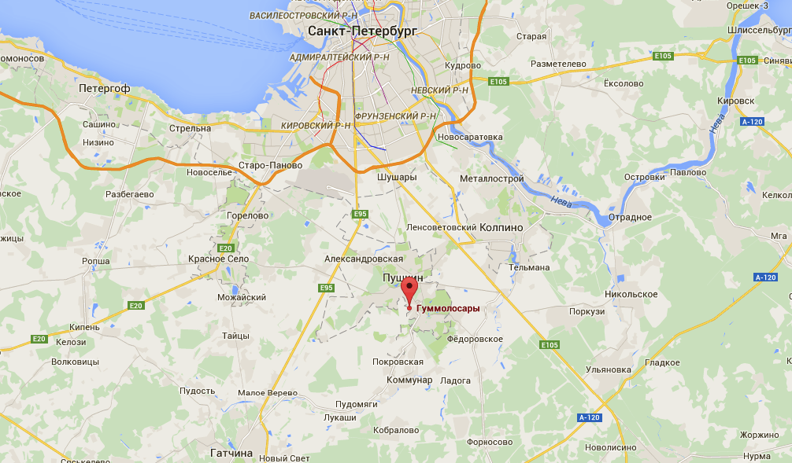

                <section class="common-section object-section select_fanc">
            <div class="common-white-wrap">
                <h1 class="object-title">Комплекс работ в многоквартирных жилых дома в г.Пушкин Гуммолосары для компании ЮИТ</h1>
                <div class="galleria-wrap">
                    <div class="fotorama" data-fit="cover" data-width="1600"
                         data-arrows="true" data-ratio="18/9"
                         data-max-width="100%" data-nav="thumbs"
                         data-thumbheight="64" data-allowfullscreen="true">
                                                    
                                            </div>
                </div>
                <div class="additional-content-wrap">
                    <p><strong>Сдача объекта:</strong><br/> апрель 2016 г.</p>
                    <p><strong>Общая площадь:</strong><br/>28800&nbsp;м²</p>
                    <p><strong>Адрес:</strong><br/>  г. Санкт-Петербург, г. Пушкин, Гуммолосары</p>
                </div>
                <div class="main-content-wrap">
                    <p>В пригороде Санкт-Петербурга организация проводит комплекс работ по производству и монтажу металлоконструкций, устройству кровли в многоквартирных типовых жилых домах. Работы выполняются по заказу компании ЗАО &#171;ЮИТ Санкт-Петербург&#187;.</p>
                </div>
            </div>
        </section>
    